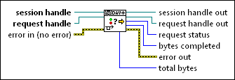
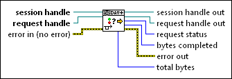

Asynchronous Request Status VI
Owning Palette: WebDAV Asynchronous VIs
Requires: Full Development System
Gets the current status of an asynchronous request.

 Add to the block diagram Add to the block diagram |
 Find on the palette Find on the palette |
Owning Palette: WebDAV Asynchronous VIs
Requires: Full Development System
Gets the current status of an asynchronous request.

| Add to the block diagram |
Find on the palette |
 |
session handle specifies the unique reference to the WebDAV session. | ||||||||||
|
request handle specifies the unique reference to the WebDAV request. | ||||||||||
 |
error in describes error conditions that occur before this node runs. This input provides standard error in functionality. | ||||||||||
 |
session handle out returns the unique reference to the WebDAV session. | ||||||||||
|
request handle out returns the unique reference to the WebDAV request. You can wire this output only to other asynchronous WebDAV VIs. | ||||||||||
 |
request status returns the current status of the WebDAV request.
|
||||||||||
 |
bytes completed returns the number of bytes that LabVIEW has uploaded or downloaded since the WebDAV request began. If the request does not transfer any bytes, bytes completed returns a value of 0. | ||||||||||
 |
error out contains error information. This output provides standard error out functionality. | ||||||||||
|
total bytes returns the number of bytes that LabVIEW will upload or download when the request is complete. |